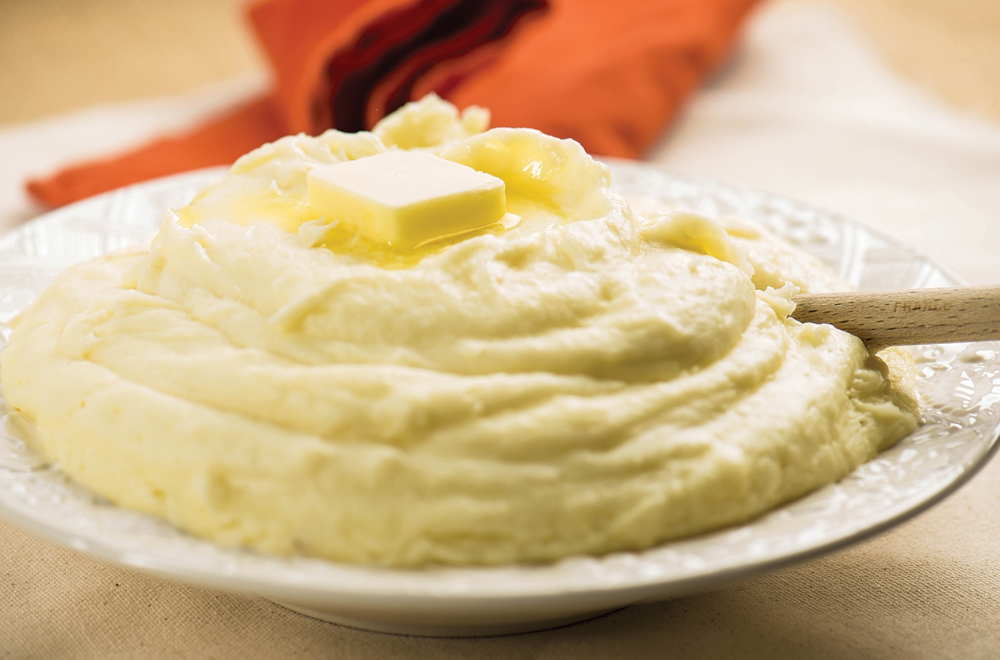

Basic Mash Potatoe Recipe
Home

Recipe
- 2 pounds baking potatoes, peeled and quartered
- 2 tablespoons butter
- 1 cup milk
- salt and pepper to taste
Steps
-
Step 1: Bring a pot of salted water to a boil. Add potatoes and cook until tender but still firm, about 15 minutes; drain.
- Step 2: In a small saucepan heat butter and milk love heat until butter is melted. Using a potato masher or electric beater, slowly blend milk mixture into potatoes until smooth and creamy. Season with salt and pepper to taste.